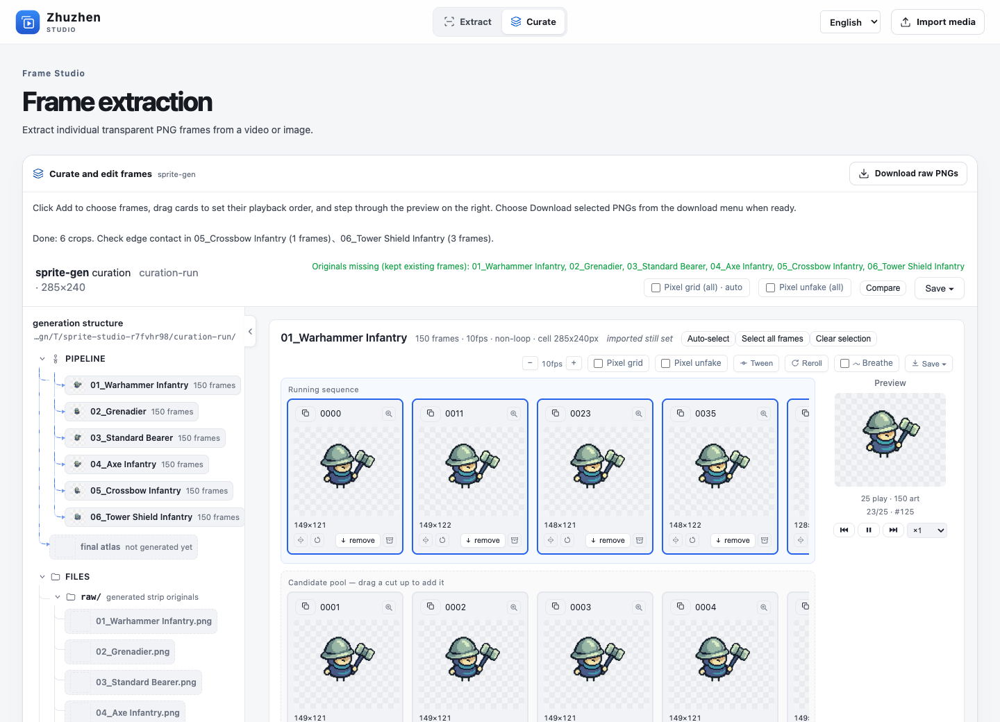

Start with the generated MP4 and crop layout JSON
The layout records the grid, key color and foot baseline. Both tools scale the saved cells to the decoded video dimensions.
Give each generated clip its own crop layout. Export transparent PNGs in batches or review and select individual frames in SpriteFrame.

The layout records the grid, key color and foot baseline. Both tools scale the saved cells to the decoded video dimensions.
Sample at 10 fps and write one transparent PNG sequence per cell plus a manifest.
python scripts/extract_frames.py \
--video assets/video-inputs/blue-units-3x2-wan-prime-480p.mp4 \
--layout examples/tiny-swords/wan-layout.json \
--fps 10 --out work/tiny-swords/framesChoose Import crop layout, open the matching MP4, then choose Extract every frame and choose to review, reorder and export selected poses.
One five-second clip produced six sequences of 50 candidate frames. The Godot scene plays those PNGs with nearest-neighbor sampling. The batch mixes idle, walking and skills, and some frames show magenta edge spill.

The Godot scene can also load the Blue Archer idle sheet from a local Tiny Swords Free Pack. It aligns the Archer and generated Warhammer Infantry on a shared foot line. Run the local comparison ↗